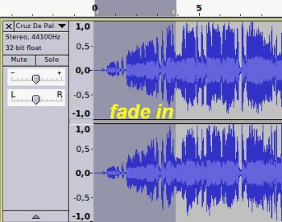

2. Efectos - Segunda Parte
En este apartado se muestran la finalidad de diversos efectos de las que dispone el Audacity y algunas consideraciones sobre los mismos. Definiremos los efectos: amplificar, amplificar bajos, cambiar tono, cambiar velocidad, cambiar tempo y el eco.
| Recomendación: Antes de aplicar un efecto, si el mismo dispone de un botón de previsualización (preview), escuchemos la función y resultado del mismo antes de aplicarlo a la línea de tiempo. |
- Fade In (Aparecer): Aplica una subida lineal del volumen al audio seleccionado. Para una subida logarítmica, utiliza la herramienta envolvente.
Este efecto es muy útil cuando queremos incrementar el sonido, de la zona seleccionada, de forma progresiva.
|  |
- Fade Out (Desvanecer Progresivamente): Aplica un desvanecimiento lineal de volumen al audio seleccionado.
Se aplica generalmente al final de una pista de audio que haya terminado de forma inesperada o porque que el archivo de audio estaba cortado o incompleto al final. Es el efecto contrario al anterior (fade in).
Tanto en el efecto fade-in y fad-out debemos seleccionar la zona de forma muy discreta para evitar un desvanecimiento o una amplificación de sonido muy desmesurada. Recordemos que los efectos de fade-in y fade-out pueden ser aplicados en cualquier lugar de la pista, pero se sugiere que sea en el inicio y al final de la pista.
ORIGINAL EFECTO FAD-OUT

- Invert (invertir): Este efecto vuelca las muestras de audio de arriba hacia abajo, es decir, invierte la fase de sonido. Normalmente esto no afecta el sonido para nada. Es recomendable utilizarlo para restar señales: eliminar la voz de una pista.
Es útil utilizarlo cuando uno de los canales contiene menor número de instrumentos e igual cantidad de vocalizaciones. Inviertiendo sólo uno de los canales provocará que, anulando los vocales, quedarán en igualdad de instrumentos.
Antes INVERTIR
- Noise Removal (Eliminación de Ruido): Este efecto nos permite eliminar los ruidos de fondo de nuestras grabaciones. El mismo puede ser producido por el sonido de un mal micrófono, sonidos de ambiente, ventiladores, entre otros. Lo que realiza este efecto es eliminar determinadas frecuencias en las que se encuentran las clasificadas como ruido.
Para la aplicación de este efecto debemos realizar dos pasos:
1. Primero seleccionamos una parte del fichero o línea de tiempo. No seleccionemos toda la pista debido a que no sabría distinguir lo que debe filtrar. Lo que hacemos es Obtener un perfil del ruido (get noise profile). Vamos a Menú de Efectos / Noise Removal y obtenemos dicho perfil. La pantalla se cierra y volvemos a repetir el proceso.
2. Modificamos los parámetros (2). Cuanto mayor sea el valor de Noise reduction (reducción de ruido) más bajo se escuchará al aplicar el filtro porque eliminará frecuencias que superen dichos decibelios. Al igual que ocurre con la frecuencia y la cadencia. Prueba siempre con valores bajos y, poco a poco, utilizando la previsualización obtén el resultado que se considere ideal.
Observa el resultado gráfico de la línea de tiempo al aplicar los valores de la imagen anterior.
ANTES DEL EFECTO
APLICADO EL REMOVAL NOISE
- Equalization (Ecualizador): El nuevo efecto Ecualización, mostrado a continuación, tiene varios controles de construcción de un filtro complejo para incrementar o reducir ciertas frecuencias. Se puede bien dibujar una curva de ecualización arbirtraria o utilizar un ecualizador gráfico.
Este efecto nos permite ecualizar (modificar los parámetros de agudos y graves) de la pista, con plantillas predeterminadas. El programa dispone de una serie de ellas basados en los modelos de ecualizacion que se gastaron y que aún se usan en algunas discograficas (apartado 4, imagen inferior). Igualmente, permite generar nuestras propias plantillas.
La aplicación nos permite ver la pantalla de ecualización en forma de ondas o en formato gráfico. La primera imagen nos muestra nuestra ecualización en formato de curvas u ondas.
Si tenemos activada (3) dibujar curvas nos muestra la ecualización (valores en dB y Hz) de nuestro sonido. Hemos de conocer que la voz humana va desde, aproximadamente, los 80 Hz hasta los 1100 Hz. En los nodos (2) podemos modificar la forma de la onda (tirando hacia arriba o abajo con el ratón). Si desconocemos detalles técnicos, el efecto nos permite (4) seleccionar tipos de ecualizaciones básicas.
Es recomendable elegir una plantilla (4) ya existente y, desde ésta, modificar pequeños valores para adquirir el resultado deseado. Utiliza siempre la preview antes de aceptar.
Carga la plantilla (4) de amradio (si tu versión dispone de ella) y, a posterior, carga una RCA y observa la diferencia de ecualización. La primera suena como una radio antigua, mientras la otra suena como los reproductores de vinilo antiguos.
Otra forma de ecualizar nuestra selección es utilizar (5) el formato gráfico (EQ). En la zona (6) nos permite ecualizar basado en lo que se realiza en los ecualizadores digitales y analógicos (los que usan los pinchadiscos, por ejemplo) y el resultado de nuestra ecualización lo muestra (7) en formato de curva. Esto permite mejorar, utilizando los diversos valores (hZ) de nuestro ecualizador para mejorar o distorsionar el sonido.
Ejemplo: si deseamos escuchar una voz brllante aumenta de los 400 Hz hasta los 3000 Hz. Es decir, toda la zona centro (6) de tu ecualizador.
En muchas ocasiones, el ensayo y error, modificar diferentes valores de nuestros botones (6) y previsualizarlos hasta que hayemos la combinación de la ecualización ideal para nuestro tramo.
Cuando deseamos aplanar (flatten) (12) la onda con 0dB en todas las frecuencias utilizamos el botón respectivo. Esto es muy válido cuando tenemos algo con muchos sonidos agudos o graves y aplanamos y modificamos, posteriormente, la ecualización del mismo.
- Reverse (reverso o inverso): Este efecto invierte el sonido, es decir, hace que se reproduzca en sentido contrario. Parecido a lo que hacen los pinchadiscos al darle hacia atrás a un disco.
La finalidad del mismo es para realizar pequeños efectos en nuestros ficheros de sonido.
- Repeat (repetir):Hace una serie de repeticiones de la parte seleccionada. Simula la parte de Copiar y pegar varias veces. Es ideal para repetir un efecto o un sonido muy corto varios veces.
- Wahwah: este efecto simula el efecto del mismo nombre utilizado en las guitarras eléctricas.
La idea es combinar la señal original con señales retardadas y espaciadas en el tiempo. Esta variación se realiza utilizando el oscilador de baja frecuencia (LFO). Debemos indicar la velocidad (LFO Frecuencia), el Depth indica el % del efecto que va afectar a tu pista, la Resonancia es la reverberación que vas a escuchar.Prueba con diferentes valores y observarás el resultado.En muchas ocasiones simula la salida de sonido por etapas y fases de los diversos canales, tal como si con equalizador se moviera canal derecho y canal izquierdo.
Existen muchos más efectos y filtros en tu Audacity. Depende de tu versión o de la instalación de complementos adicionales que hayas realizado
Descubre por tu cuenta la finalidad y resultados de edición de la aplicación de otros efectos en la producción de tu fichero final.
Jo.R.C.A. 2004 - 2011

Edición de Audio y Video con Software Libre by José Ramón Cerdeira Alonso is licensed under a Creative Commons Reconocimiento-No comercial-Compartir bajo la misma licencia 3.0 España License